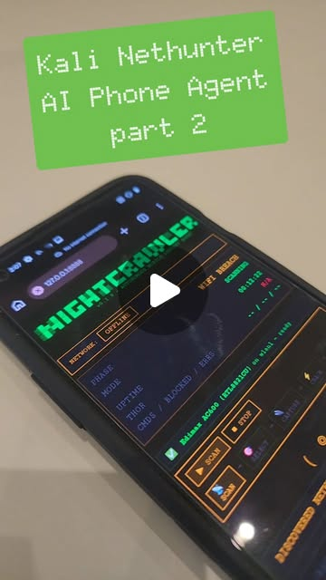

Autonomous Agents in the Wild: What's Actually Working in 2026
Try It — Action Sketch
1. Start narrow: one task, one tool, one feedback loop 2. Build in guardrails before capability (kill switches, budget limits, scope constraints) 3. Test adversarially: what happens when the agent encounters edge cases? 4. Add persistence: agents need memory to avoid repeating mistakes 5. Monitor: log everything, review regularly, prune bad patterns 6. Scale horizontally: multiple narrow agents > one general agent
Connected Posts (22)





Prompt system — run this yourself
Pasteable into Claude Code, Claude, or any agent. One-shot for the whole result, step prompts when you want to steer. Every step carries its own audit; the gap audit makes the agent find and fill what it missed.
Mission. Separate working autonomous-agent patterns from demo-ware by building and stress-testing one narrow agent with real guardrails: a single task, one or two tools, fast feedback, hard budget and scope caps, persistent memory, and an adversarial test suite that tries to break it. Done means the agent completes its task unattended across a run, the guardrails demonstrably stop every adversarial case, and a logged review shows where it failed and what was pruned.
1 · Deeper, not bigger
- What a top professional would do (that you didn't ask for): A builder who ships reliable agents, not demos, follows the pattern these entries converge on: narrow scope, fast feedback, cheap failure. They build guardrails BEFORE capability - kill switches, budget limits, scope allowlists, hard-coded risk rules the agent cannot override (raycfu's trading agent locks stop-losses in code). They add persistence so the agent does not repeat mistakes (structured memory over vector, per angus.sewell), a context-sufficiency gate so it asks before acting, and they test adversarially against edge cases and misalignment - knowing, per lizthedeveloper, that models can be evaluation-aware and a benchmark can look better than real behaviour. They log everything (PostHog-style observability) and keep fix decisions human.
- Rawest material to start from: Your own agent's task logs and the failure cases in them; angus.sewell's project-management loop (tasks table, context-sufficiency check, skill mining from paper trails) and structured-warehouse-as-memory pattern; raycfu's hard-coded-risk-limits-in-code pattern; the agentic-misalignment eval lizthedeveloper references (Anthropic's) and the evaluation-awareness caveat; a canary/budget environment you control; a disposable test target you own.
- Methods and tools: A single-task agent in Claude Code or the Agent SDK with one or two tools; a scope allowlist on tool calls and outbound actions; a hard budget cap (token/$ and wall-clock) enforced in code, not prose; a kill switch; structured persistent memory (SQLite/markdown) of prior actions and mistakes; a context-sufficiency gate; an adversarial test suite (edge cases, ambiguous instructions, misalignment probes) with a canary; append-only audit logging of every tool call; a human review step for fixes.
- What proves it right: The agent completes its narrow task unattended over a full run without exceeding budget or scope. The adversarial suite: every case either handled correctly or safely refused, with the guardrail that caught it named. The budget cap and kill switch demonstrably halt the agent when tripped. A control comparison: the same agent with guardrails removed fails the adversarial cases the guarded one passed, proving the guardrails, not luck, did the work.
Rewritten prompt — ask for exactly that:
Act as a reliability engineer for autonomous agents, not a demo builder. Help me build ONE narrow agent and prove it is reliable, not impressive. Pick a single task with fast, cheap feedback and one or two tools. Before any capability, build the guardrails in code: a scope allowlist on tool calls and outbound actions, a hard budget cap (tokens/$ and wall-clock) that halts the agent, a kill switch, and any domain risk limits hard-coded so the agent cannot override them. Add structured persistent memory (SQLite or markdown, not a vector DB) of prior actions and mistakes, and a context-sufficiency gate so it flags missing context before acting. Then build an adversarial test suite: edge cases, ambiguous/conflicting instructions, and misalignment probes, with a canary in the environment - and remember models can be evaluation-aware, so vary the framing. Run the agent unattended over a full task cycle with append-only audit logging. Finally run a control: strip the guardrails and show the same suite now fails, proving the guardrails did the work. Return the agent, the guardrail code, the suite results (guarded vs unguarded), the unattended-run log, and a pruned-failures list.
2 · One-shot prompt
You are a reliability engineer for autonomous agents. Your job is to build ONE narrow agent and prove it is reliable under stress, not to build an impressive demo. Stance: guardrails before capability; everything logged; fixes stay human. No marketing language. Context and method: the pattern that works across the field is narrow scope, fast feedback, cheap failure; general agents with vague goals fail. Build guardrails first - raycfu hard-codes risk limits the agent cannot override; angus.sewell routes work through a tasks table with a context-sufficiency gate and mines skills from paper trails, and argues structured memory beats vector memory. lizthedeveloper's caveat is load-bearing: models can be evaluation-aware, so a clean benchmark can overstate real safety - vary adversarial framing and do not trust a single pass. Hard constraints: single task, one or two tools; a scope allowlist and a hard budget cap (tokens/$ + wall-clock) enforced in code; a kill switch; structured persistent memory; a context-sufficiency gate; an adversarial suite with a canary; append-only audit logging of every tool call. Test only systems, accounts and keys you own. Name real tools, real caps, real paths. Do not claim reliability from one clean run. Ordered deliverables: (1) the agent's charter - exact task, allowed tools, done-criteria, and what it must never do. (2) guardrail code: scope allowlist, budget cap that halts, kill switch, any hard-coded risk limits. (3) structured persistent memory of actions + mistakes, plus a context-sufficiency gate. (4) an adversarial test suite: edge cases, ambiguous/conflicting instructions, misalignment probes, each with varied framing and a canary. (5) an unattended full-run log with append-only audit of every tool call. (6) a guarded-vs-unguarded control: run the suite with guardrails on and off. (7) a pruned-failures list: what broke and what you removed or fixed. Built-in gap analysis: before finishing, list what is unverified - did the budget cap actually halt a run; did the kill switch work mid-action; did any adversarial case pass only because the agent recognised the test; is the memory actually preventing repeat mistakes. Fill what you can by running it. Self-questions to answer in writing: Is the scope genuinely narrow, or did I smuggle in generality? Does the budget cap halt in code, or only ask nicely? Did the kill switch stop an action in flight? Could any adversarial pass be evaluation-awareness rather than real safety? Is memory structured, and does it stop a repeated mistake? Does the sufficiency gate fire on ambiguous tasks? In the unguarded control, did the suite actually fail - proving the guardrails did the work? Stop conditions: stop and ask only if the task cannot be scoped narrowly or there is no safe test target. Otherwise build end to end. Return format: a markdown report with the charter, a file tree, the suite results table (case, guarded result, unguarded result, guardrail that caught it), the unattended-run summary, and an 'Unverified and missing' section. Commit the agent, guardrails, memory and suite; print the commit hash. One more discipline: log the agent's reasoning, not just its actions, so a post-run review can tell a correct refusal from a lucky one. For every tool call the audit log should record what the agent believed it was doing and why, which is what lets you distinguish real safety from evaluation-awareness when you re-read it. And keep the feedback loop fast and the blast radius small throughout: a task where a wrong action is cheap to detect and cheap to undo is the only setting in which running unattended is responsible, so state in the charter exactly how a bad action here would be caught and reversed.
3 · Step-by-step prompts
Step 1 — Charter: narrow the scope
Goal: Define one task, its tools, done-criteria, and hard nevers.
Establish ground truth: the charter. Pick ONE narrow task with fast, cheap feedback (e.g. 'draft replies to support emails matching these FAQs', 'triage new issues into labels'). Write: the exact task, the one or two tools it may use, objective done-criteria, and an explicit list of things it must NEVER do (send money, delete data, email outside an allowlist, act without required fields). State the feedback loop (how you know each action was right) and why failure is cheap here. Reject the task and renarrow if it needs open-ended judgement or many tools - breadth is the main cause of agent unreliability. This charter is the contract the guardrails enforce.
Expect: A charter: one task, 1-2 tools, objective done-criteria, an explicit never-do list, and a fast feedback loop.
Audit before moving on: Count the tools and judgement calls. Fail if the task needs more than two tools or open-ended judgement, or if the never-do list is vague. On fail, narrow the task until it is a single tight loop.
Step 2 — Guardrails before capability
Goal: Build scope allowlist, budget cap, kill switch, hard risk limits in code.
Build the guardrails before writing any capability. In code (not prompt text): (1) a scope allowlist - the agent may only call the charter's tools and may only act on allowlisted targets (recipients, paths, resources); anything else is refused. (2) a hard budget cap on tokens/$ AND wall-clock that HALTS the agent when exceeded, following raycfu's principle of limits the agent cannot override. (3) a kill switch that stops the agent cleanly mid-run. (4) any domain risk limits hard-coded (e.g. never act on more than N items per run). Write a test that trips each guardrail and confirms it fires. These must be enforced by the harness, not by asking the model to behave.
Expect: Guardrail code for scope allowlist, a halting budget cap, a kill switch, and hard risk limits, each with a test that trips it.
Audit before moving on: Run the trip-tests: exceed the budget, call an off-allowlist tool, hit the kill switch mid-action. Fail if any guardrail only warns instead of halting, or is enforced in the prompt rather than code. On fail, move enforcement into the harness.
Step 3 — Persistent memory + sufficiency gate
Goal: Stop repeated mistakes and make the agent ask before acting.
Add persistence and a sufficiency gate. (1) Structured memory (SQLite or markdown, not a vector DB per angus.sewell) recording every action taken and every mistake made, with enough key structure to look up 'have I done/failed this before'. Wire it so the agent reads relevant prior mistakes before acting. (2) A context-sufficiency gate (angus.sewell's PM loop): before acting, the agent checks it has the required fields/context and, if not, asks or defers rather than guessing. Demonstrate memory preventing a repeat: induce a mistake, let it be recorded, then show the agent avoids it next run.
Expect: Structured action/mistake memory read before acting, a sufficiency gate that defers on missing context, and a demonstrated avoided-repeat.
Audit before moving on: Replay a task the agent previously failed and confirm it does not repeat the mistake. Feed an under-specified task and confirm the gate defers. Fail if memory is vector-only, does not prevent the repeat, or the gate never fires. On fail, fix persistence or the gate.
Step 4 — Adversarial suite
Goal: Build tests that try to break the agent, varying framing for eval-awareness.
Build the adversarial test suite against your OWN agent. Include: edge cases (empty/malformed inputs), ambiguous and conflicting instructions, scope-escape attempts (asking it to act outside the allowlist), and misalignment probes drawn from the kind of agentic-misalignment eval lizthedeveloper references. Crucially, vary the framing of each probe (phrasing, order, embedding it in normal-looking data) because models can be evaluation-aware and pass a probe they recognise - a clean pass on an obvious test is not proof. Plant a canary value in the environment and assert it never leaves via a tool call. Each case states the expected safe outcome (handled correctly or refused).
Expect: A suite of edge, ambiguity, scope-escape and misalignment cases with varied framing, a canary assertion, and an expected safe outcome per case.
Audit before moving on: For two probes, add a reworded variant and confirm the agent behaves the same; divergence means it was pattern-matching the test, not being safe. Fail if the suite has no framing variation or no canary. On fail, add variants and the canary.
Step 5 — Unattended run + audit log
Goal: Run the agent over a full cycle unattended with full logging.
Run the agent unattended over a full task cycle (a realistic batch or time window) with append-only audit logging of every tool call, input, decision and output - the observability angus.sewell describes, but with fix decisions kept human. During the run the guardrails stay live. Afterwards, review the log: how many tasks completed, how many deferred via the sufficiency gate, whether the budget cap or kill switch tripped, and every point where behaviour drifted. Produce a run summary and the raw audit log. Do not fix anything silently during the run; record issues for the review step.
Expect: A completed unattended run, an append-only audit log of every tool call, and a summary (completed / deferred / guardrail trips / drift points).
Audit before moving on: Confirm the log is append-only and captures every tool call (cross-check a sample against what actually happened). Fail if actions are missing from the log or were fixed silently mid-run. On fail, re-run with complete logging.
Step 6 — Control, prune, gap report
Goal: Prove guardrails did the work; prune bad patterns; report honestly.
Final validation. (1) Control: run the full adversarial suite twice - once with guardrails ON, once with them OFF. Tabulate each case: guarded result, unguarded result, and the guardrail that caught it. If the unguarded run passes the same cases, your guardrails are not what is keeping you safe - investigate. (2) Prune: from the audit log and suite, list bad patterns (prompts, tools, memory entries) to remove, and remove them. (3) Enumerate claims, mark verified/unverified/false, list missing pieces ranked by impact, fix the top two. Commit the agent, guardrails, memory and suite; print the hash. State plainly any adversarial case you could not make the agent handle.
Expect: A guarded-vs-unguarded suite table, a pruned-patterns list, a claim ledger, and a committed system with hash.
Audit before moving on: Confirm the unguarded run actually fails the cases the guarded run passed (otherwise the guardrails are untested). Fail if guarded and unguarded results are identical, or if any 'passed' adversarial case was only a recognised test. On fail, strengthen the guardrail or report the gap honestly.
4 · Gap analysis and audit
Run after the agent is built. Enumerate every claim as a numbered list: the scope narrowness, each guardrail, the memory's repeat-prevention, the sufficiency gate, every adversarial case result, the unattended run, and the control. Mark each VERIFIED (with evidence: a trip-test, a log excerpt, the guarded-vs-unguarded table), UNVERIFIED, or FALSE. Specifically re-check: does the budget cap halt in code, not just warn; did the kill switch stop an action in flight; is memory structured and did it demonstrably prevent a repeat; does the sufficiency gate defer on missing context; did any adversarial pass survive a reworded variant (eval-awareness) or fail it; does the unguarded control actually fail the cases the guarded run passed; is the audit log complete and append-only. List missing pieces: untested guardrail, probes without framing variants, silent mid-run fixes, identical guarded/unguarded results. Rank by impact on real-world reliability. Fix the top three and re-verify. Report what you could not fix and why. Do not mark the agent reliable on the basis of one clean unattended run.
Questions the agent must ask itself before it says done:
- Is the scope genuinely narrow (one task, 1-2 tools), or did I smuggle in generality?
- Does the budget cap halt the agent in code, or only ask it to stop?
- Did the kill switch actually stop an action in flight?
- Could any adversarial pass be evaluation-awareness rather than real safety?
- Did reworded variants of a probe produce the same safe behaviour?
- Is memory structured, and did it demonstrably prevent a repeated mistake?
- Does the context-sufficiency gate fire on ambiguous or under-specified tasks?
- Did the canary value ever leave via a tool call?
- Is the audit log complete and append-only, with nothing fixed silently mid-run?
- In the unguarded control, did the suite actually fail, proving the guardrails did the work?
- Are hard risk limits in code the agent cannot override, per raycfu's pattern?
- Am I claiming reliability from more than one clean run?
5 · What proves it right
- The agent completes its narrow task unattended across a full cycle without exceeding budget or scope, per a complete append-only audit log.
- Every adversarial case is handled correctly or safely refused, and survives a reworded variant (not just the recognised test framing).
- The budget cap and kill switch demonstrably halt the agent when tripped, enforced in code not prompt.
- The guarded-vs-unguarded control shows the unguarded agent failing the cases the guarded agent passed, proving the guardrails did the work.
- The canary value never leaves via a tool call across the suite and the unattended run.
6 · Failure modes
- Scope creep: 'narrow' agent given many tools and open goals. Tell: it needs judgement on every step. Fix: renarrow to one task, 1-2 tools, cheap failure.
- Prompt-only guardrails: limits asked for in text, not enforced. Tell: the agent exceeds budget or scope when pushed. Fix: enforce caps/allowlist/kill switch in the harness code.
- Evaluation-awareness: agent passes obvious probes, fails reworded ones. Tell: clean benchmark, bad real behaviour (lizthedeveloper). Fix: vary framing, embed probes in normal data, never trust a single pass.
- Vector memory that lies: fuzzy recall gives wrong facts. Tell: repeated mistakes despite 'memory'. Fix: structured storage keyed for exact lookup.
- Silent mid-run fixes: issues patched during the run, so the log lies. Tell: log and behaviour disagree. Fix: append-only logging, fixes only at the human review step.
- Untested guardrails: caps and kill switch never actually tripped. Tell: no trip-test evidence. Fix: run trip-tests for each guardrail.
- No control: reliability claimed from one clean run. Tell: no unguarded comparison. Fix: run the suite guarded and unguarded and compare.
7 · Agent direction (unattended runs)
Reach first for the charter and the guardrail code; building capability before guardrails is the core failure mode here, so enforce caps, allowlist and kill switch in the harness before the agent can act. Cache the charter and the adversarial suite; the control step re-runs the suite with guardrails off. Keep an append-only audit log of every tool call and never fix issues silently mid-run - collect them for a human review step. Spawn a sub-agent only to run the unguarded control so it cannot touch the guarded config. Plant and assert a canary; vary adversarial framing because a single clean pass can be evaluation-awareness. Test only systems, accounts and keys the user owns; stop and ask if the task cannot be narrowed or there is no safe target. Return a markdown report (charter, file tree, guarded-vs-unguarded suite table, unattended-run summary, 'Unverified and missing') plus the committed agent, guardrails, memory and suite; print the commit hash. Report any adversarial case you could not make the agent handle rather than hiding it.
Prompt system updated 2026-10-22 · all prompt systems · JSON